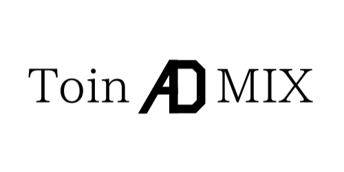

[ 2024/02/01 | AU ]
Toin ADMIXは2022年4月に結成された、高校1年生3人で構成されるチームです。 RCJ Soccer Lightweightに参加しており、ジャパンオープン2024名古屋に出場することが決まっています。

このブログでは、基本的には大会等の結果や反省、ロボットの近況や新着基板などを不定期に報告していこうと思っています。
ハード面ソフト面含め、やってみて上手く行ったこと、行かなかったことをできるだけわかりやすく共有していくので、暇なときにぜひ覗いてみてください。
また、試合動画や使っている部品、過去のソースコードなどはこちらのホームページで公開しています。
では、また次の記事でお会いしましょう。
（↓和歌山ノード大会の記念写真）


© 2023 AU - Toin ADMIX